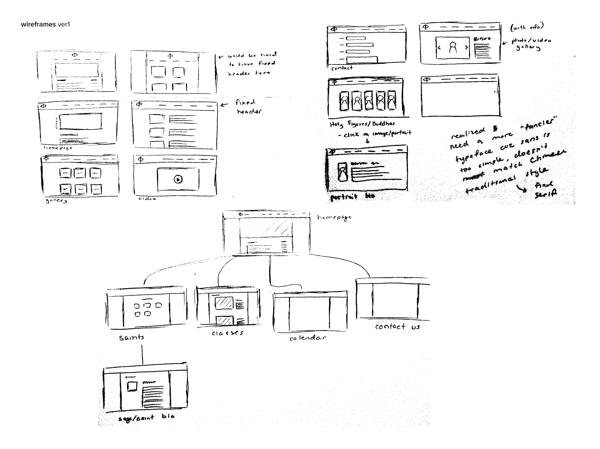
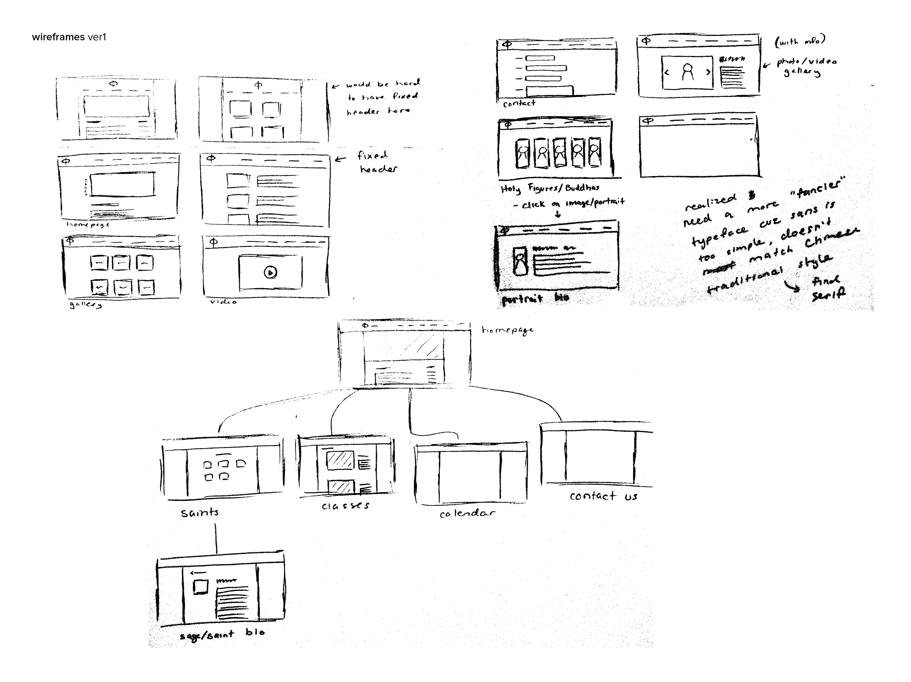
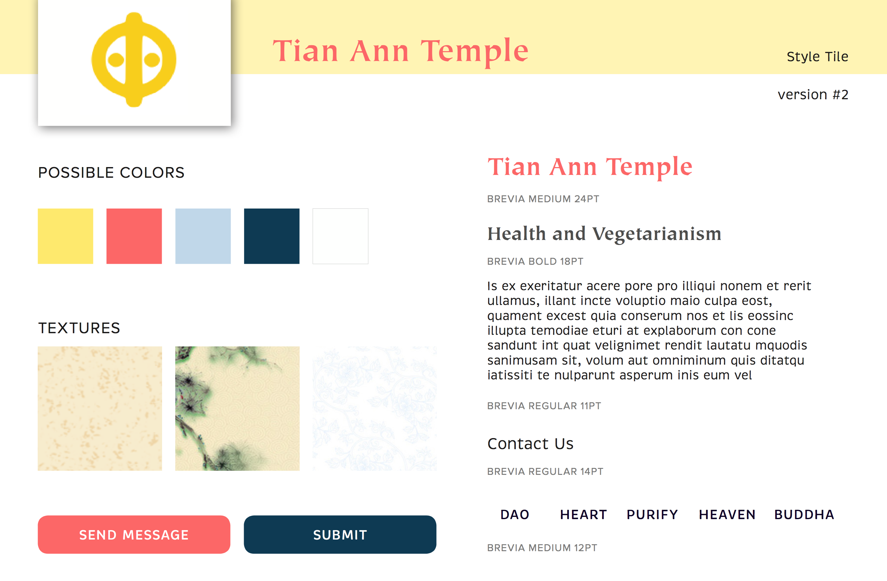

The client likes the information that’s presented in this site. The design of it though is something they’re not looking at.
Very simple and nice structure and hierarchy. (they incorporated a english and chinese version)
Closest to what the client might be aiming for.
Layout is simple. Implementation of video is nice (client is considering this)
Use of icons with tabs is a great idea. Promotes usability and welcome feeling. Also like the countdown to next event clock. No parallax needed.
Color palette here is nice. Simple logo that's prominent enough.
Client mentioned this website; they like how much useful information is in this site.
Serious lagging due to all the graphics and animation. But I'm liking the Chinese classical style/paintings.
Another Chinese classical style which is consistent throughout the site. Takes a while for opening page/site to load.
A little old-fashioned but it's simple and easy to read/use.
Lots of boxes going on here...
 

Click below to see drafts...

Click to see full pdf... 